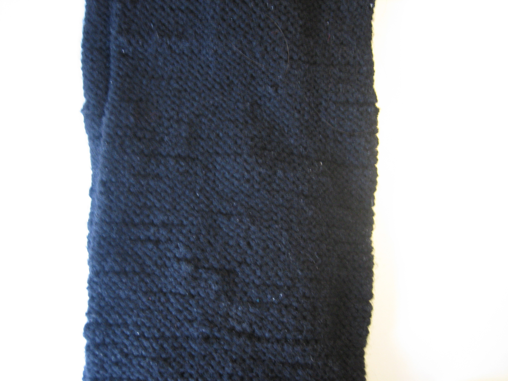

02032025 - welp
Biweekly .. . . .
The cycles of life have landed me here once again on a sunday writing a blog post and I am thankful to be doing so.
We shouldnt linger too long on the fact that my last biweekly post was 5 weeks ago, I have let u down my dear rss feed and for that I am sorry.
Feburary
Feburary is a strange month, The tuesday of the year; The novelty of janurary has passed but yet the trudging cold of winter presits.
It really is the monthwhere one must just buckle down and get on with, of course the poignant 'it' stays unclear as ever.
Feburary really is the month of undoing where the material reality plows away all the freshly fallen snow of ideas that janurary had left.
Im not sure what I want to say with this diagnosis of Feburary- at the very least im glad the next one is 11 months away.
projects
I finally finished my scarf. With my first knitting project I discovered my affinity for the texture and look of the purl stich.
The idea of this scarf was to only have the purl stich be visible. To achieve this I knitted a tubular shape and knitted the two ends shut.
This make the scarf thicker than what would normally be expected of a scarf and is what made it take exceptionnally long to knit.
In the end the scarf also is shorter than I would have liked coming in at about 140cm Although Im told this should be able to be increased with blocking.
As my second knit project I am fairly happy with how the scarf turned out.
 A shorter one today
Yes the ontological proof is in the works.
I hope to see you in two weeks,
gorgi
the nurishment -
[listen]
Julek ploski - Give Up Channel
nykolaes & Daniël Paul - neofolks
Two Lone Swordsmen - Stay Down
fakemink - Easter Pink
[watch]
Wim wenders - Notebook on cities and clothes
[read]
Virginia Wolf - A Room of One's Own
A shorter one today
Yes the ontological proof is in the works.
I hope to see you in two weeks,
gorgi
the nurishment -
[listen]
Julek ploski - Give Up Channel
nykolaes & Daniël Paul - neofolks
Two Lone Swordsmen - Stay Down
fakemink - Easter Pink
[watch]
Wim wenders - Notebook on cities and clothes
[read]
Virginia Wolf - A Room of One's Own
26012025 - biweekly !?
rss feed
When i revamped my website on a whim 2 weeks ago it was out of bordem more than anything, so im really suprising myself that only two weeks later I am back writing another entry.
For reason I hope to make clear this entry I am making a promise to you dear rss feed, i will write an entry biweekly, every second sunday.
SUNDAY IS THE START OF THE WEEK.
In my last entry I indetified a problem I have (planning/organization) and stated that I just needed to 'plan better'.
Implementing this simple solution to my problem has led me into identifying a new axiom by which I shall live my life by:
SUNDAY IS THE START OF THE WEEK.
To motivate this axiom I should first explain that I have decided to focus on planning my life week by week, This means every week I should think about what I wish to accomplish and plan how I wish to achieve it.
keeping in mind that organization and planning are a practice that one does before the action that one is organizing/planning for, We now have to find time for planning each and every week.
With this newly minted axiom, I have decided to bestow this honor on Sunday. I now start every week by planning and organizing for the coming seven days.
My windows calender has already fittingly altered itself to this new reality.
Of course How I plan my week is still an important detail that I have yet to touch on. Until now it has consisted of me using my planner more consistently and authoring weekly to-do lists.
The details of the methods will be spared for a future post.
Do I care enough?
At the start of this post I made a promise to update this feed biweekly. This promise stems for a place of concern that has been swelling in me for the past while.
Do I care enough?
My impression is that most people that know me would describe me as closed, distant maybe even the dreaded mysterious. I dont like these descriptions and this is not who I want to be,
In thinking about why people describe me in this way I have really begun to fear that I have a blanket of apathy covering everything I do, I really worry that I dont know how to care.
In framing my actions in this way it becomes obvious why I have I would have periods of deep depression and why I would have a hard time opening windows into my personal self for the people I care about.
So Im embarking on a journey to nurture and expand my care.
I need to prove to myself that I really do care about things.
This journey kinda starts with this rss feed here I can just dump the contents of my mind and really think through the stuff I am keeping myself busy with and thus should care about atleast somewhat. This should hopefully explain why I will update it every two weeks.
i care :>
Look at this sunset
 projects
spekaing of care, in the last two weeks Ive worked on a couple intresting things.
I completely revamped the home page of my website, it looks a bit like this now
Gonna continue working on this in the coming weeks I think.
I also stitched a bag for luise's birthday with my good friend sophie :]
it looks like this
projects
spekaing of care, in the last two weeks Ive worked on a couple intresting things.
I completely revamped the home page of my website, it looks a bit like this now
Gonna continue working on this in the coming weeks I think.
I also stitched a bag for luise's birthday with my good friend sophie :]
it looks like this
 Also still knitting my scarf.
I think thats all for this update.
Yes the ontological proof is in the works.
See you in two weeks,
gorgi
the nurishment -
[listen]
Khadija AL Hanafi - !OK!
The Duke of Juke - nuthin' but sum duke knwldg
Loukeman - Won't U
[watch]
Zia Anger - My First Film
William Kentridge - Self-Portrait as a coffee-pot
[read]
E-flux magazine - The internet Doesnt Exist
Also still knitting my scarf.
I think thats all for this update.
Yes the ontological proof is in the works.
See you in two weeks,
gorgi
the nurishment -
[listen]
Khadija AL Hanafi - !OK!
The Duke of Juke - nuthin' but sum duke knwldg
Loukeman - Won't U
[watch]
Zia Anger - My First Film
William Kentridge - Self-Portrait as a coffee-pot
[read]
E-flux magazine - The internet Doesnt Exist
07012025 - happy 2025
rss feed
testing ... is this thing on?
This is the first post on my rss feed.
My using of this technology was made possible with everest-pipkin's guide. yay
Its 2025 now, time flies.
Looking back the deeply chronological structure of school; year 1, year 2, year 3, all the way till year 13 provides nicely a framework in which to precive time, through this numerical ordering i was continously concious of time passing and the progress till the end of school.
In university this continues, although to a lesser extent as the semster of study you are in becomes less relevant, I for instance am currently in my seventh semester but i am regulararly in classes with students ranging from first semster students to master students.
This is all to say that i feel my perception of time has changed drastically since i graduated school, i believe this change in part has come my graduation from institutions that are highly organized in the dimension of time.
Its kind of cliche but i feel like ive become more passive letting the ebs and flow of time carry me instead of paddeling through it with purpose.
Of course this is subjective and i can point to multiple instances in the past years where my own agency has shone through.
I plan to finish my bachelors degree this year (in eight semsters) one year longer than regelstudiezeit, after that the world unlocks for me and i become unbound by institutions organized in time.
The suspiciosn is, of course, that having such frameworks to organize time by is actually very useful not only logistically but also emotionally. Precieving time in the past few years has felt like a sudden schock like a lag spike in counter strike resolving.
Rather than a satisfying moment in which i can level headedly evaluate the chronology.
Time will march on and learning to step in time cannot hurt.
So I have identified a problem and must now work towards solutions, I think the solution here is kind of obvious, just plan better.
Planning is of course a skill that i have left severly underdeveloped... I guess that makes for a good new years resolution for 2025.
I think a good place to start is probably todo lists...
Ill update how this character development arc evolves ...
I dont have much more to say for now,
and yes the ontological proof is in the works,
until then,
gorgi
the nurishment -
[listen]
Sega Bodega - Romeo
Khadija AL Hanafi - Slime Patrol 2
Fimiguerrero - I Want Everything
Torus - Summer of Love
[watch]
Wong Kar War - Fallen Angels
Alexandre Koberidze - What do we see when we look at the sky?
Celine Sciamma - Water Lilies
Gia Coppola - Palo Alto
Wim Wenders - Perfect Days
[read]
Robert Linhart - The Sugar and the Hunger
Rashid Khalidi - The Hundred Years' war on Palestine
Kurt Vonnegut - Mother Night
István Örkény - The Flower Show
István Örkény - The Troth Family
Oscar wilde - The Picture of Dorian Gray
you have reached the end of the feed.
byee
byee
byee